System quick-start
Turning on the system
This guide assumes that you’re starting from a system reboot where you’ll need to start up the entire software stack. If not, you might find some or all of these steps have already been completed!
(1) Turn on the system and log in
Generally the system should already be on; press either the keyboard or the mouse and after a few moments the screens on the desktop should turn on. If the system isn’t already on, look on the server rack for a red button and press it.
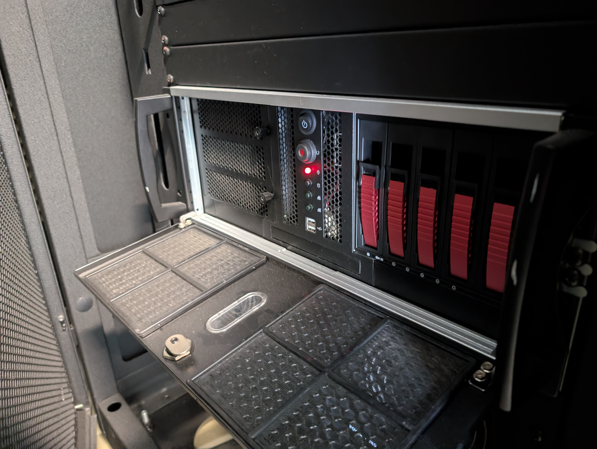{kind=link}
Once it’s on, you’ll need to log into Windows. For the system password, look for it taped to the keyboard!
(2) Turn on the VizLab screens
On the control desk you should find a separate CRESTRON touchscreen to control the displays. Touch the screen to wake it, then press ‘On’. You may have to wait a few moments as the screens all flash ‘PLANAR’ as they boot up. Once they’ve finished booting, they should be displaying content from the system!
Using the VizLab as a standard Windows machine
Since the VizLab runs Windows, you can use it just like any other Windows system, just with a very large screen attached! Read on to learn how to do that effectively.
(3) Get your content onto the VizLab screen
The VizLab desktop is oriented “above” the large screen, so to move content from the desktop screen to the VizLab screen, drag it down to the bottom of the desktop screen and it will appear on the VizLab screen.
Once you’ve dragged it onto the big display, use the keyboard shortcut Fn + F11 to make it go full-screen across the entire display.
As for content to show on the screen, you have two choices: remote content via Zoom or local content that’s directly on the system.
Showing local content (presentations, Chrome, etc.) across the screen
For sharing local content, you have multiple options: going through a web browser (with or without signing into a account to do so) or by uploading your content to the VizLab’s Google Drive folder, which automatically syncs to the system.
Then like before, drag it onto the main display and use the Fn + F11 keyboard shortcut to make it full-screen across the display.
Running system-specific software
The VizLab also has system-specific software that takes full advantage of its capabilities. To get that running, read on!
(4) Start getReal3D for Unity daemon
Find ‘getReal3D for Unity daemon’ in the Windows Start menu (either by typing the name in or finding it in the subfolder GetReal3D for Unity 4) and click on it. Once you click, you should see a terminal window pop up initially, but that will go away, and the application will run minimized in the system tray.
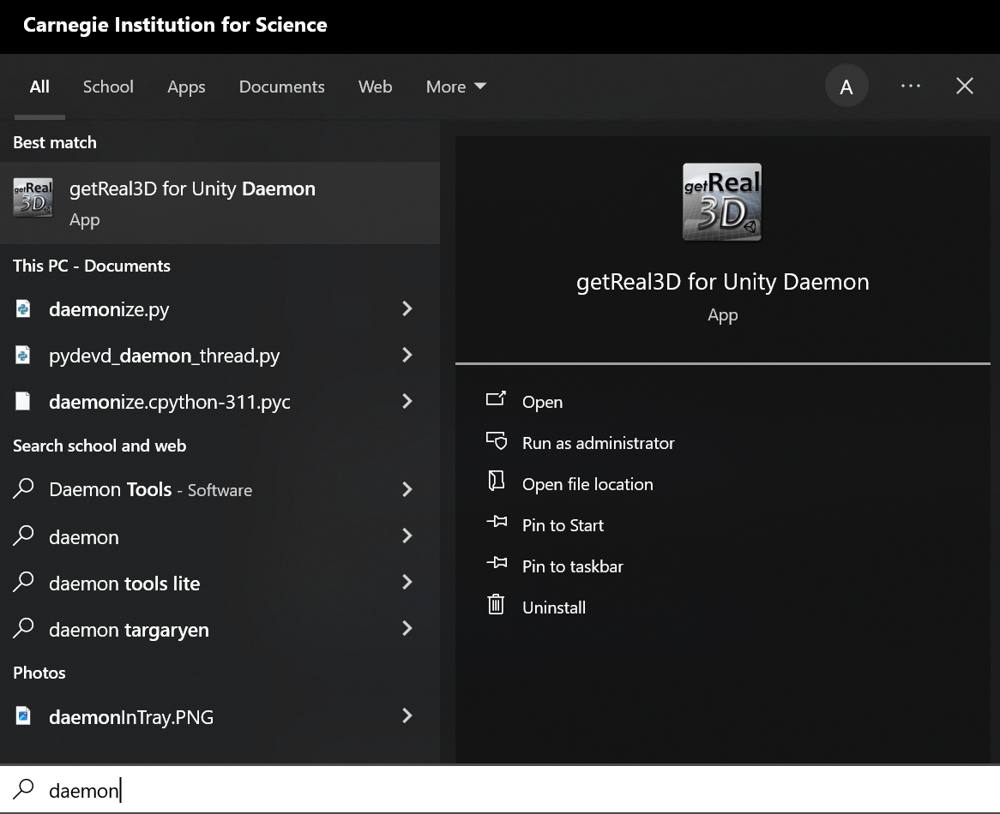{kind=link}
Once you see it running in the tray (as shown below, in the bottom left of the leftmost monitor on the desk), you can move on to the next step!
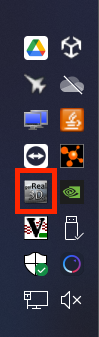{kind=link}
(5) Start DTrack3 and connect controller
Now we need to get the tracking up and running. To do that, launch the DTrack3 application, which you can find pinned to the taskbar with the icon shown below.
{kind=link}
You’ll need to connect to the tracking controller to open the application proper. You should just need to press ‘Connect’; if you have problems connecting check out the troubleshooting guide.
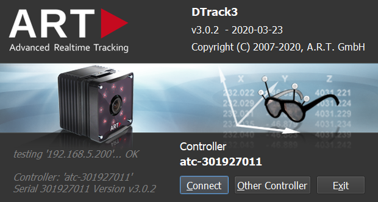{kind=link}
When the software opens, it might open across the entire VizLab screen. The screens on the control desk are connected to the VizLab screens, so to reach the window move the mouse cursor through the bottom of the screens on the control desk and you should end up towards the top of the VizLab screens. Once you’ve navigated to the window, grab the top of it and drag it back to the control desk screens. While you’re dragging the window, moving the cursor to the top of the control desk screens and releasing your click will ‘snap’ the window to the size of the current monitor.
Lastly if the tracking isn’t running (shown by two bodies and the ‘Start’ button replaced with ‘Stop’ as in the second image) you might need to press start at the top of the window so the tracking camera can see within the space.
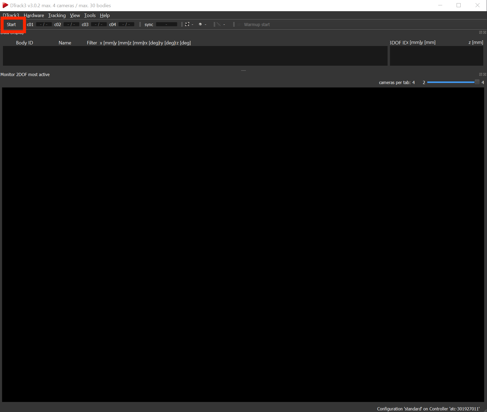 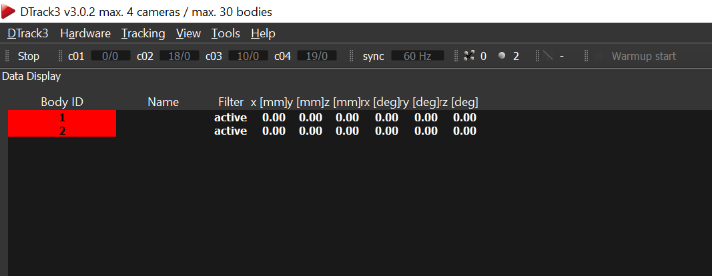{kind=link}
{kind=link}
(6) Start trackd middleware
DTrack3 does the actual tracking, but to pass this information along with controller button presses, you need to be running trackd as well. Like DTrack3, you can find this pinned to the taskbar - click on its icon to open it.
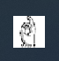{kind=link}
It might prompt you to connect the controller: to do that, just press any of the colored buttons on the front and it should pair automatically. If the controller is connected and DTrack3 is running, dtrack should start printing state for both the glasses and the controller. To verify that controller inputs are coming in properly, press a button or move one of the control sticks and you should see that information update in dtrack in real time.
 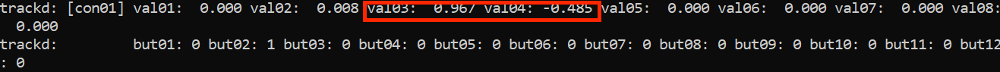
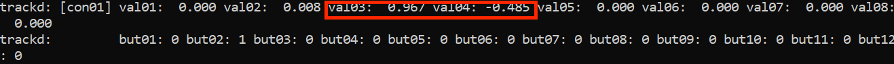
{kind=link}
(7) Start launcher and run application!
The last step is using the getReal3D for Unity launcher to launch your Unity app of choice! This should be pinned to the taskbar, find it with the icon below:
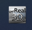{kind=link}
Once it’s open, you’ll see a list. If you want to add a new application, you can press the plus at the bottom left and navigate to the correct .exe file.
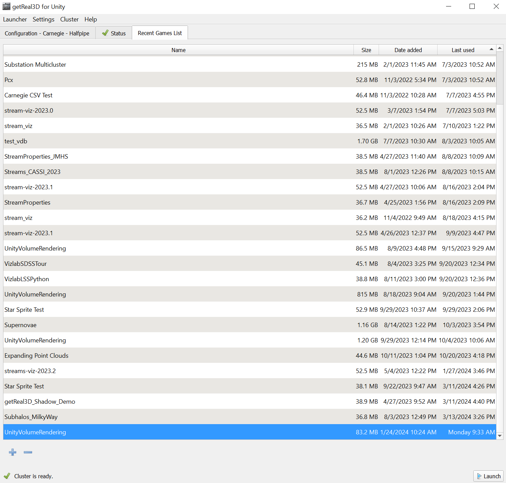{kind=link}
When you’re ready to start an app, just press launch at the bottom right. It will only work if you’ve followed all the instructions though, so look out for these errors and warnings in the bottom left:
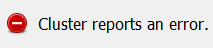{kind=link}
Check that the daemon is running if you’re getting this error!
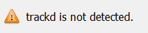{kind=link}
Make sure you’re running trackd if you see this!
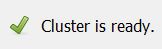{kind=link}
This means you’re (probably) all good to go! Note that the launcher doesn’t throw an error or warning if DTrack3 isn’t running, so if the application starts and the tracking isn’t working, start there!
Now that you’ve set up the VizLab, you’re ready to run software! Running ‘vizlab-core’ in the launcher will start up our main visualization package. For a full list of software available to run, check out the PREBUILTSCENES page.